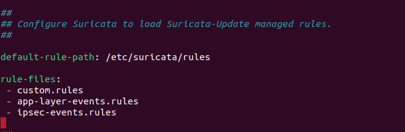

Suricata IDS with Splunk Enterprise
This guide explores the implementation of a comprehensive network security solution combining Suricata, an open-source Intrusion Detection System (IDS), with Splunk, a powerful data analysis and visualisation platform. This comprehensive security implementation combines real-time threat detection with advanced log analysis and visualization. By leveraging custom rules, automated updates, and network segmentation monitoring, organizations can significantly enhance their ability to detect, analyze, and respond to security incidents.
1. Installing Suricata
First, let's install Suricata:
sudo add-apt-repository ppa:oisf/suricata-stable
sudo apt install suricata2. Configuring Suricata
After installation, configure Suricata:
-
Open the configuration file:
sudo nano /etc/suricata/suricata.yaml -
Set your main network interface:
af-packet: - interface: eth0 # Replace with your actual interface name -
Add custom rules:
 -
Save and exit the file.
3. Creating Custom Rules
Create a custom rule file:
sudo nano /etc/suricata/rules/custom.rulesWe can create our own custom rules and save it inside rules directory with .rules file extension (or we can also use pre-made rules from github nmap detection rules).
eg. This rules detects potential DOS attack and generates alerts:
alert tcp $EXTERNAL_NET any -> $HOME_NET any (msg:"LOCAL DOS SYN packet flood inbound, Potential DOS"; flow:to_server;
flags: S,12; threshold: type both, track by_dst, count 5000, seconds 5; classtype:misc-activity; sid:5;)
alert tcp $HOME_NET any -> $EXTERNAL_NET any (msg:"LOCAL DOS SYN packet flood outbound, Potential DOS"; flow:to_server;
flags: S,12; threshold: type both, track by_dst, count 5000, seconds 5; classtype:misc-activity; sid:6;)4. Setting Up Splunk
4.1 Installation
Download and install Splunk Enterprise and Splunk Universal Forwarder.
4.2 Normalisation of logs
Normalisation is usually essential when we are ingesting logs from multiple sources and in case of suricata there are multiple log types. Artica TA helps by extracting relevant fields from the raw data of eve.json. While it's not exactly a normalizer it does perform normalization functions. This add-on provides CIM (Common Information Model) compliant field extractions, which is a form of normalization. CIM is Splunk's way of normalizing data across different sources to a common format.
We can download artica ta from splunk find apps section where we can download various other add ons
4.3 Configuring Splunk Enterprise
4.3.1 Start Splunk Enterprise:
cd /opt/splunk/bin
sudo ./splunk startCreate a new username and password for web portal :
Open the address displayed in the terminal and insert the web portal credentials :
4.3.2 Set up a forwarder to receive logs:
- Go to "Settings" > "Forwarding and receiving"
- Click on "Add new" under "Receive data"
- Choose port 9997


4.4 Configuring Splunk Universal Forwarder
Start the splunk forwarder at a endpoint where you want to monitor
-
Start the Splunk Universal Forwarder:
cd /opt/splunkforwarder/bin sudo ./splunk start -
Configure forwarding:
sudo ./splunk add forward-server <splunk_enterprise_ip>:9997 -
Add Suricata logs as a data input:
sudo ./splunk add monitor /var/log/suricata*
Now the forwarder will send suricata logs to splunk enterprise. we can also add other monitor. eg. /var/log/apache2/access.log to monitor apache webserver logs
5. Searching logs in Splunk
To view Suricata alerts in Splunk:
-
Go to "Search & Reporting" and select source type and eve.json
-
Use this search query:
source="/var/log/suricata/eve.json" event_type=alert
For potential DOS attacks:
source="/var/log/suricata/eve.json" event_type=alert "LOCAL DOS SYN packet flood"6. Advanced Splunk Visualizations
Create a custom dashboard for Suricata alerts:
-
In Splunk, go to "Dashboards" and click "Create New Dashboard"
We can also create dashboard using xml code:
Example dashboards:
Application protocol Dashboard:
Port usage dashboard:
Creating Dashboard through UI
-
Add a panel for failed destination ips (excludes certain ip):
-
Search:
source="/var/log/suricata/eve.json" app_proto=failed | where dest_ip != "192.168.0.105" | | top limit=20 dest_ip - Visualization: Column chart
-
Search:
-
Add a panel for top targeted ports:
- Search:
source="/var/log/suricata/eve.json" event_type=alert | top limit=10 dest_port - Visualization: statistics table
- Search:
-
Add a panel for geographic distribution of alert sources:
- Search:
source="/var/log/suricata/eve.json" event_type=alert | iplocation src_ip | geostats count by alert.category - Visualization: Choropleth Map
- Search:
7. Implementing Automated Rule Updates
To keep Suricata rules up-to-date automatically:
-
Create a script named
update_suricata_rules.sh:sudo nano /usr/local/bin/update_suricata_rules.sh -
Add the following content:
#!/bin/bash /usr/bin/suricata-update systemctl restart suricata -
Make the script executable:
sudo chmod +x /usr/local/bin/update_suricata_rules.sh -
Create a cron job to run this script daily:
sudo crontab -e -
Add this line to run the script daily at 2 AM:
0 2 * * * /usr/local/bin/update_suricata_rules.sh
8. Network Segmentation Monitoring
To monitor traffic between network segments:
- Identify your network segments and their corresponding interfaces.
-
Edit the Suricata configuration:
sudo nano /etc/suricata/suricata.yaml -
Add multiple interfaces to monitor:
af-packet: - interface: eth0 # External network - interface: eth1 # Internal network segment 1 - interface: eth2 # Internal network segment 2 -
Create segment-specific rules in
custom.rules:alert ip $SEGMENT1_NET any -> $SEGMENT2_NET any (msg:"Cross-segment traffic detected"; sid:1000001;)Replace
$SEGMENT1_NETand$SEGMENT2_NETwith your actual network ranges.
9. Performance Monitoring and Optimization
Monitor Suricata's performance:
-
Check Suricata's stats:
sudo tail -f /var/log/suricata/stats.log -
If performance issues arise, optimize by editing
suricata.yaml:sudo nano /etc/suricata/suricata.yaml -
Adjust the
max-pending-packetsvalue:max-pending-packets: 2048 -
Increase or decrease based on your system's capabilities.
10. Real-Time Alerting in Splunk Enterprise
Splunk Enterprise offers powerful real-time alerting capabilities to enhance incident response. Here's a quick overview of how it works and how to set it up:
- Continuous Monitoring: Real-time alerts constantly scan incoming data.
- Immediate Detection: Alerts trigger as soon as specified conditions are met.
- Two Types: Per-Result (triggers for each event) and Rolling Window (evaluates over time intervals).
- Navigate to the Search page in the Search & Reporting app.
- Create and refine your search query.
- Select "Save As" > "Alert".
- Choose "Real-time" as the alert type.
- Select triggering condition (Per-Result or specify a time window).
- Configure alert actions by clicking "add actions"(e.g., email notifications).
- Email alert :
- Set optional throttling to prevent alert fatigue.
- Save the alert.
How It Works
Setting Up Real-Time Alerts

This report demonstrates a comprehensive approach to integrating Suricata IDS with Splunk for enhanced network security monitoring. By following the step-by-step process, from basic installation to advanced features, we've created a robust system capable of detecting and analyzing a wide range of security threats.